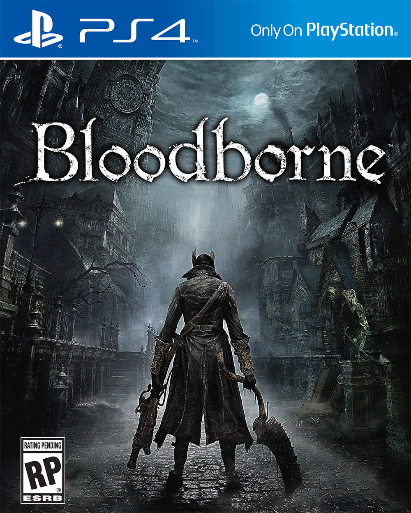

This project is dedicated to a literature genre known as cosmic horror.
It purpose is to aid a writer to build a truly lovecraftian world, and to come up with its story.
Lovecraftian horror, also called cosmic horror or eldritch horror, is a genre, often called a subgenre of horror, fantasy fiction and weird fiction that emphasizes the horror of the unknowable and incomprehensible more than gore or other elements of shock. It is named after American author H. P. Lovecraft (1890–1937).
When writing fiction, one may stumble upon the need of a perfect representation of power.
Some would need to introduce a deity, or at least a powerful creature the reader is supposed to fear.
The thing is, it should never be
human.
Something that is beyond human emotions, and most likely beyond one's picture of the world.
If you have ever read H. P. Lovecraft, you may have touched the feeling of the wild nightmare
he tried to deliver. You may want to have a brief read about one who is known as the father of
cosmic horror. For further reading, you may want to read the basic concepts founded by Lovecraft,
or get familiar with its practical use for worlbuilding.
As one could guess, the creation of the first half of XIX century yet still lives on as
one of the most attractive cultural reference, and furhermore, a source of imagination,
which makes a genre we mean truly a wonder.
To provide one with a visible trace of H.P. Lovecraft in the art of worlbuilding and storytelling, we may get one familiar with more modern
makings.
The Horus Heresy of Warhammer 40kWarhammer 40,000, a universe know as the place of eternal battle between humans and Chaos gods. There are direct references and inspirations to Lovecraftian fiction alike. Forces beyond comprehension actively impact humans in this fiction. |
|
|---|---|
The King in YellowHastur considered to be created by H. P. Lovecraft. Thruth is, it was created by R. W. Chambers, who was influenced by Lovecraft, almost as much as Lovecraft was influenced by him |
Bloodborne and Souls-likes |
 |
|---|---|
Terraria |
The Lighthouse |
|
|---|---|
In The Mouth of Madness |